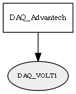

Global overview
All modules
All variables
All commands
Mission files
Pipelines
Variable: DAQ_VOLT1
Variable info:
Variable name
Short description
Who publishes it?
Who subscribes to it?
DAQ_VOLT1
Voltage measurement of differential channel 1 (Units = Volts) from the Data AQuisition Board
DAQ_Advantech
Variable graph:

Detailed description:
Voltage measurement of differential channel 1 (Units = Volts) from the Data AQuisition Board
Page generated by
Mooxygen 1.1.0
at Thu Jan 22 11:30:21 2015